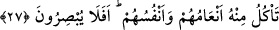

oldular/bilemediler ve onların işlerinin sonu kendilerine belli olmadı mı?
Bu âyet, Mekke kâfirlerini korkutmak üzere inmiştir.
“
”, bir asırda yaşayanları, “
” kelimesi ise asırlar boyunca yeryüzünde
yaşayan nesilleri ifâde eder.
“Bunlarda” önceki nesillerin helâk edilmesinde ve bununla ilgili izlerde ve
kalıntılarda basîret sâhibi ve öğüt alan kimseler ile gelecek ümmetlere “elbette ibretler
vardır. Hâlâ” düşünmek ve ibret almak üzere Allâh’ın âyetlerine ve öğütlerine “kulak
vermezler mi?” ki içinde bulundukları inkâr ve yalanlamaya son versinler.
Başında zan ve şüphe olan kimse,
Zannetme ki Hakk’ı işitir.
Onun ilminden usanç gelir, öğüdünden utanç.
Yağmur yağmakla taştan şakayık bitmez.
27. Kupkuru yerlere suyu ulaştırdığımızı, onunla gerek hayvanlarının gerekse
kendilerinin yiyegeldikleri ekini çıkarmakta olduğumuzu da görmediler mi? Hâlâ da
göremeyecekler mi?
“Kupkuru yerlere” yâni hiçbir şey bitirmeyen yerlere değil de; bitkileri kurumuş, yâni
yağmur olmadığı için veya otlatma gibi diğer sebeplerle bitkileri tamamen kesilen ve
ortadan kaldırılan yerlere “suyu ulaştırdığımızı,” burada kasdedilen suyu taşıyan
bulutların sevk edilmesidir. Çünkü Allah Teâlâ’ya o nisbet edilir. Her ne kadar
bitkilerin bitirilmesi Allah Teâlâ tarafından olsa da, nehirler vâsıtasıyla yapılan sulama
kula nispet edilegelmiştir.
Suyun bu şekilde sevk edilip ulaştırılması, sonra da bitkilerin yerden çıkarılması
hissedilen şeylerden olduğu için bazı âlimler, âyetteki “görme”yi gözle görmeye
hamletmiştir. Âyetin sonundaki “Hâlâ da göremeyecekler mi?” ifâdesi de buna delâlet
etmektedir.
Bahru’l-ulûm’da şöyle der: “Bu, ‘bakmak’tan maksûd olan şeye hamledilir. Yâni
onlar bizim suyu sevkedip ulaştırdığımızı elbette bilirler, anlamındadır.” Acaba
bilmezler ve görmezler mi ki biz suyu bulut içinde sevk ederiz, süreriz ve taşırız.
O kuru yerlerden “onunla” yâni sevk edilen o su sebebiyle “gerek” sap, saman,
yaprak ve hayvanlara mahsus hubûbat gibi “hayvanlarının gerekse” insanların
beslendiği hububat ve meyveler gibi “kendilerinin yiyegeldikleri ekini” ekinlik yerleri,
mahsûlleri ve ağaçları “çıkarmakta olduğumuzu da görmediler mi?”
“Hâlâ da göremeyecekler mi?” yâni onlar bakmıyorlar ve bunu görmüyorlar mı? Eğer
böyle yapsalar, bununla Allah Teâlâ’nın birliği, kudretinin ve fazlının kemâl üzere